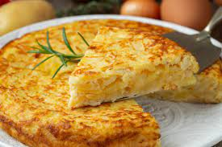

Pizza

Descripcion
Una receta de tortilal de papa bien pero bien basica.
Solo se describe como hacer la tortilla, el acompañamiento es a gusto.
Ingredientes
- Papas
- Huevo
- Cebolla
- Sal
- Guisantes verdes
Pasos
- Pelar papas, y poner a freir
- Cordtar cebolla en juliana
- Poner las papas semi fritas con la cebolla y agregar huevos (4)
- Mezclar todo y poner en una sarten
- Cocinar hasta que quede uniforme de un lado, y girarla para que se cocine del otro
- Hornear 15 minutos
- Servir